Configure the EDI Integration Process
In Boomi Integration, copy a pre-built EDI process and configure it to connect to your personal File Sharing folder paths, then run a live test to process the EDI file end-to-end.
About the EDI Workshop Process
Rather than building an EDI integration from scratch, this lab provides a pre-built process called EDI Workshop in the Source Process Library. You'll copy it into your own workspace and configure a small number of connection settings to point it at your personal File Sharing folders.
The process is a multi-path EDI workflow designed to handle incoming EDI 850 purchase orders. When it runs, it connects to the File Sharing SFTP server, retrieves the EDI file from your Inbox, and then routes it through several parallel paths based on document type and business rule validation:
- Valid purchase orders are mapped from EDI 850 format to SAP ORDERS05 format and written to your
/Returns/IDocfolder — simulating delivery to a downstream SAP system. - Documents that fail business rule validation are captured and written to your
/Returns/Rejectedfolder, with a notification generated for the originating partner. - Processing exceptions are caught by a Try/Catch mechanism and routed to your
/Returns/Errorsfolder, ensuring that failures never silently disappear. - EDI 997 functional acknowledgements are automatically generated and sent back to the trading partner via the SFTP communication settings configured on the Trading Partner record — these land in the partner's Outbox folder.
- Unknown or unrecognised document types are handled gracefully by a passthrough subprocess, allowing them to flow through without interrupting the main workflow.
This multi-path architecture demonstrates enterprise-grade EDI processing — validation, transformation, routing, acknowledgement, and exception handling all in one process.
Lab URLs
Lab Access
us-ftpsbx-02.thruinc.net · Port 22Copy the Process from the Library
Copy the pre-built EDI Workshop process from the source library into your personal workspace folder in Boomi Integration.
After logging in, your Integration workspace will look something like this — with a component tree on the left and the canvas area to the right.
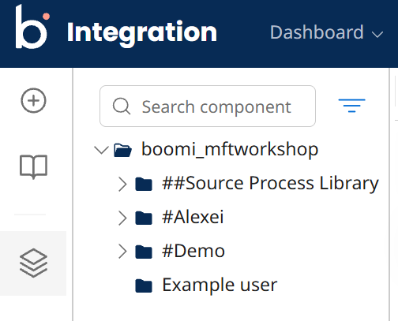
-
1
In the component tree on the left, expand Source Process Library > Processes and select the EDI Workshop process.

-
2
Click Copy Process (or the copy action). Give the copy a meaningful name and click the + icon next to Destination Folder to select where to save it — this field is required.
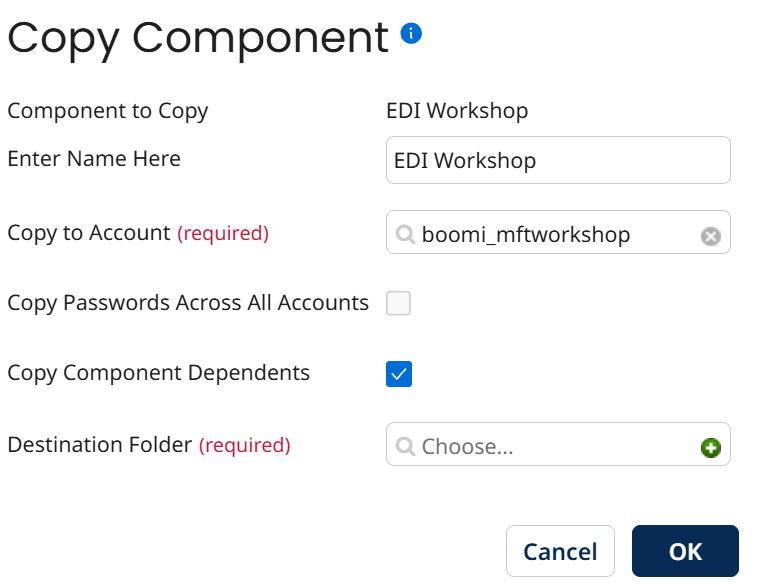
-
3
Select your personal folder from the folder picker and name the destination folder
EDI Workshop, then confirm.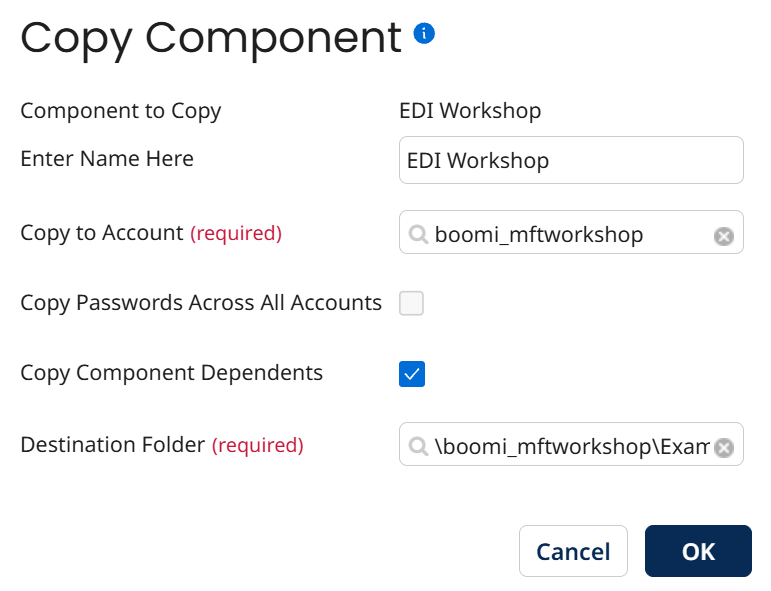
-
4
Once the copy is complete, expand your workspace folder under Processes and double-click EDI Workshop to open it on the canvas.
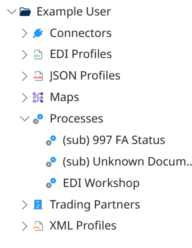
The process will open in the canvas, showing the full multi-path EDI workflow. Take a moment to trace the flow from the start shape through the branching paths — you'll be configuring the SFTP connections on each path in the steps ahead.
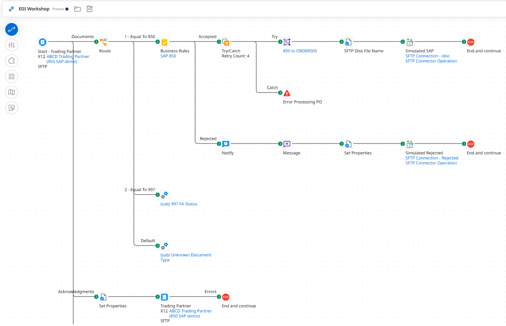
Configure the Trading Partner SFTP
Configure the ABCD Trading Partner record in Boomi Integration to connect to your personal File Sharing user — so the process knows where to pick up inbound files and send acknowledgements.
The process retrieves inbound EDI files by connecting to the File Sharing SFTP server as the trading partner. This connection is defined on the ABCD Trading Partner component, specifically on its Communication tab.
-
1
On the canvas, double-click the ABCD Trading Partner shape to open it.
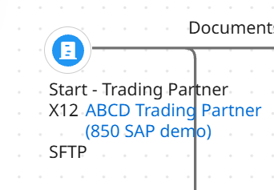
-
2
The Trading Partner overview will open. Navigate to the Communication tab.
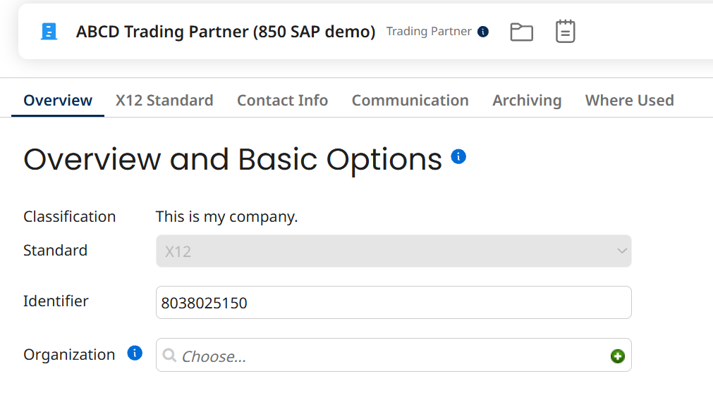
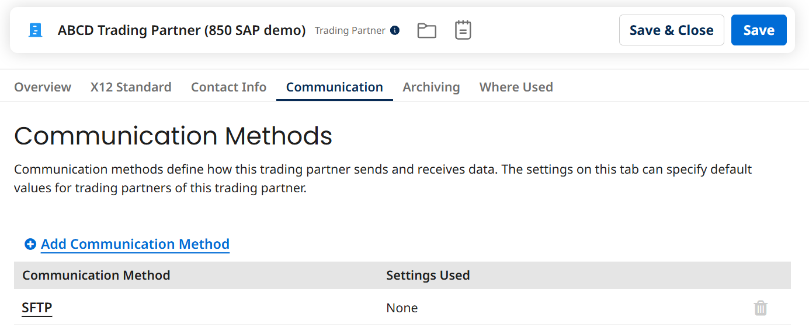
-
3
Double-click on SFTP to open the SFTP configuration for this trading partner.
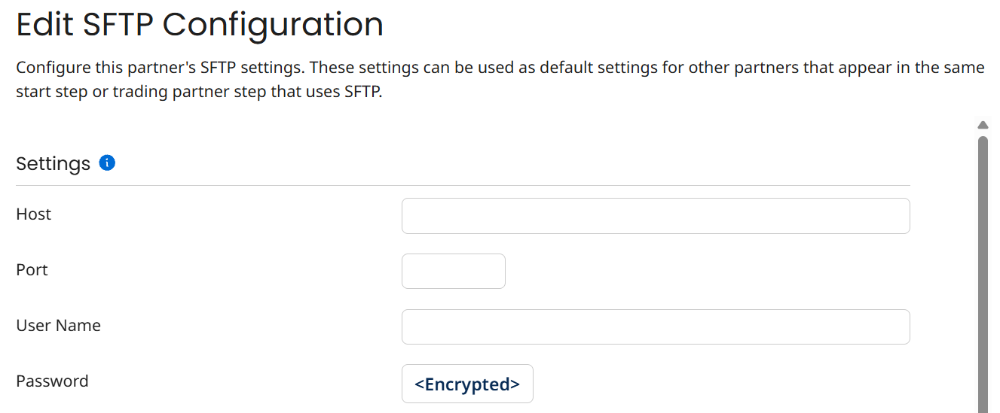
-
4
Fill in the SFTP connection details using your File Sharing credentials:
- Host:
us-ftpsbx-02.thruinc.net - Port:
22 - User Name:
sftp-trading-partner-demo.boomi.com\your.email@address.com— use the same username you use to log into the File Sharing portal - Password: use the password associated with your File Sharing account
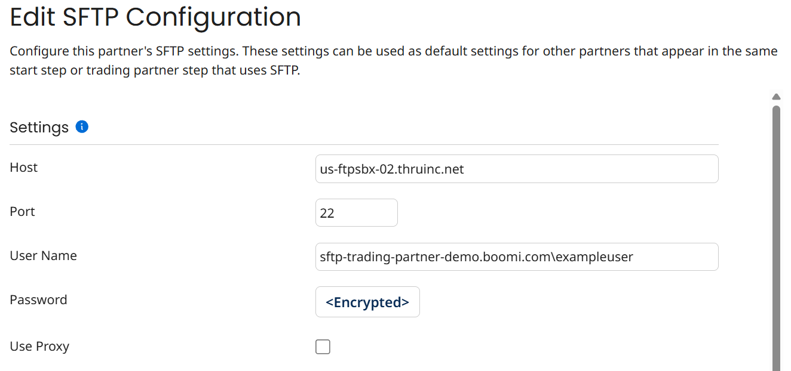
- Host:
-
5
Scroll down to the Get Options section. Set the Remote Directory to the path of your Inbox folder in the File Sharing portal.
You can copy the path directly from the File Sharing portal. Note that the path must start with /HOME — not /FOLDERS as displayed in the portal UI.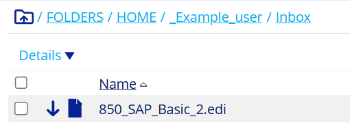
-
6
Set the File Filter to
850_SAP_Basic_2.edi— this matches the filename of the EDI file you placed in your Inbox in Exercise 1, ensuring the process only picks up that specific file.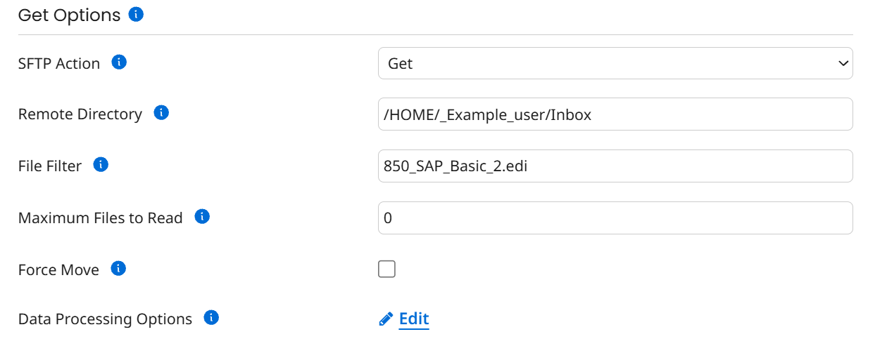
-
7
Scroll down to the Send Options section. Set the Remote Directory to the path of your Outbox folder — this is where EDI 997 acknowledgements will be delivered back to the trading partner.
Set the SFTP Put Action to
Create Unique Name if File Existsto avoid overwriting files on repeat runs.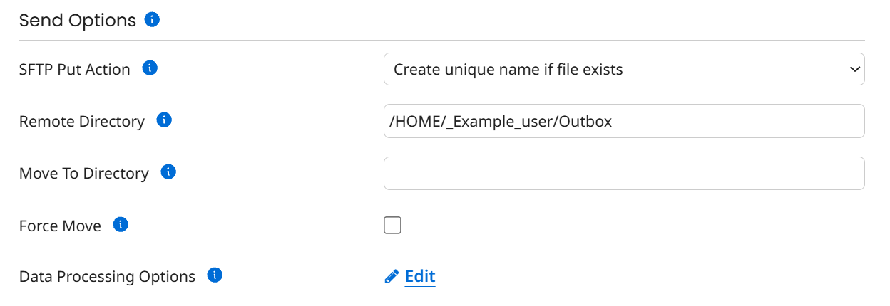
-
8
Click Close, then Save & Close to save the Trading Partner configuration.
Configure Simulated SAP & Return Paths
Update the Simulated SAP SFTP connection to point to your /Returns/IDoc folder — the destination for successfully processed and transformed purchase orders.
When a valid EDI 850 purchase order passes business rule validation, the process maps it to SAP ORDERS05 format and writes the resulting IDoc file to a designated output location. In this lab that output location is your /Returns/IDoc folder in the File Sharing portal, simulating delivery to a downstream SAP system via SFTP.
-
1
Back on the canvas, locate the Simulated SAP connection shape.
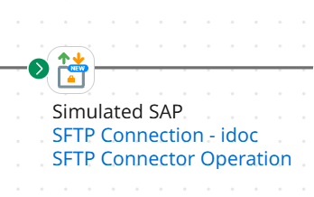
-
2
Double-click SFTP Connection — IDoc to open its connection properties.
-
3
Update the connection with the following details:
- Host:
us-ftpsbx-02.thruinc.net - Port:
22 - User Name & Password: your File Sharing credentials (same as used in Step 2)
- Remote Directory: the path to your
/Returns/IDocfolder — copy this from the File Sharing portal
Remember: the path must start with /HOME, not /FOLDERS.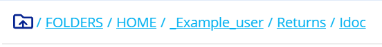
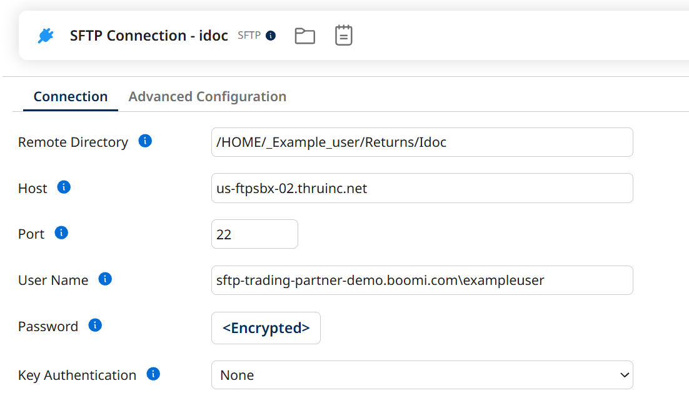
- Host:
-
4
Click Save & Close.
-
5
Next, open the SFTP Connector Operation for the Simulated SAP path and verify it is configured as shown. No changes should be needed here — this step is just a confirmation.

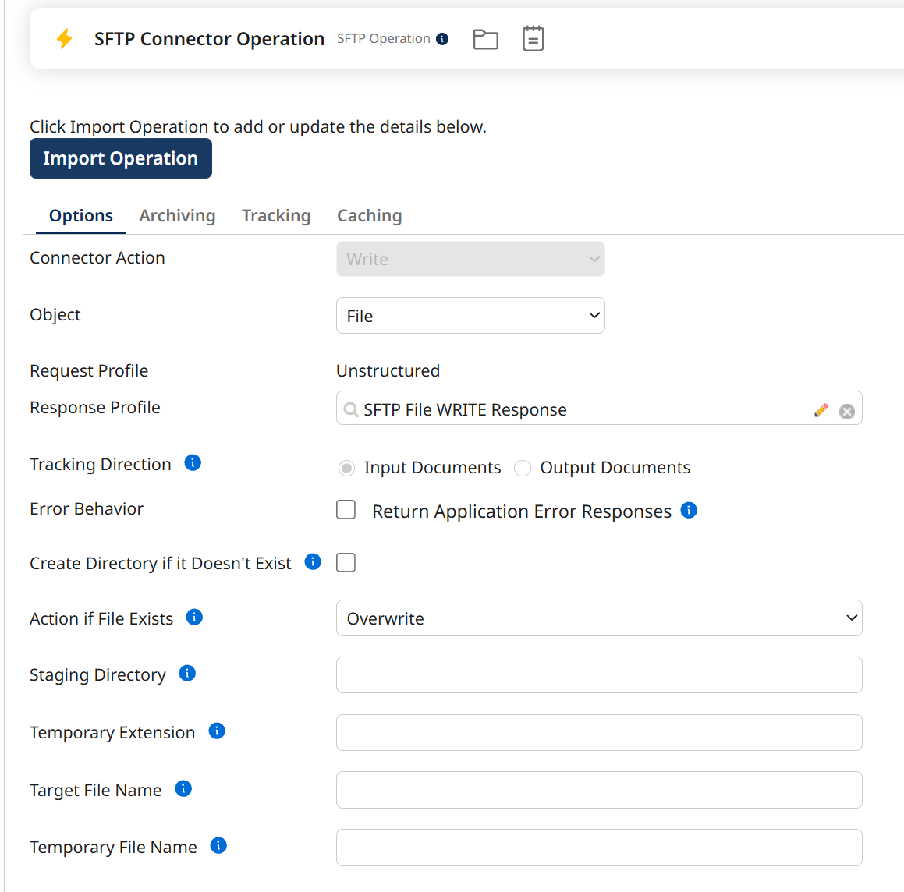
-
6
Click Save & Close.
Configure Rejected & Error Paths
Update the Rejected and Error SFTP connections to point to your corresponding return folders, completing the exception-handling paths in the process.
The process has two additional output paths for documents that cannot be processed normally. Both need to be pointed at your personal return folders so that failed files are delivered to the correct location rather than being silently dropped.
Simulated Rejected Path
Documents that fail business rule validation — for example, a purchase order with a missing mandatory field or an unrecognised partner ID — are routed to the Rejected path and written to /Returns/Rejected.
-
1
On the canvas, locate the Simulated Rejected connection shape.
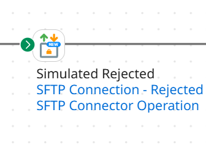
-
2
Double-click SFTP Connection — Rejected and update it with your File Sharing credentials and the path to your
/Returns/Rejectedfolder — following the same pattern as the previous step. Click Save & Close.
-
3
Review the SFTP Connector Operation for this path — no changes should be needed.
Simulated Errors Path
Any unhandled processing exceptions — connectivity failures, parsing errors, unexpected document structures — are caught by the Try/Catch mechanism and written to /Returns/Errors. This ensures that every failure is captured and visible.
-
4
Scroll to the bottom of the canvas. You will see two additional paths: Acknowledgements and Simulated Errors.
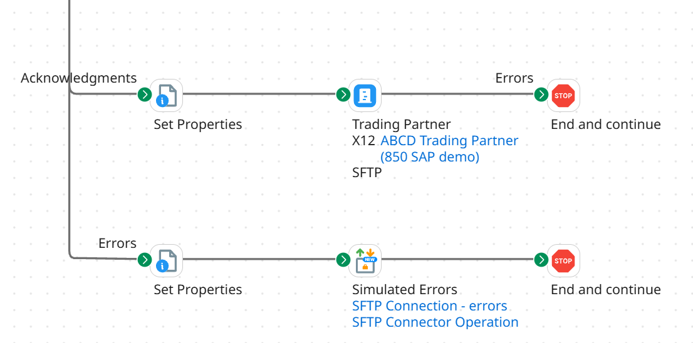
-
5
Double-click SFTP Connection — Errors and configure it with your File Sharing credentials and the path to your
/Returns/Errorsfolder. Click Save & Close.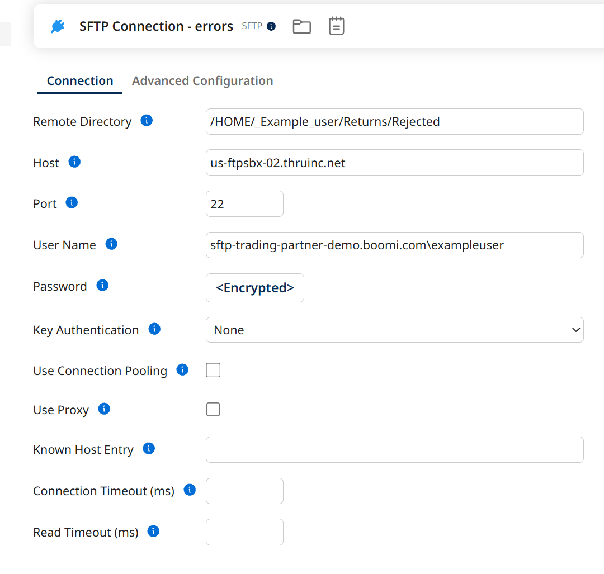
-
6
Review the SFTP Connector Operation for the Errors path — no changes should be needed.
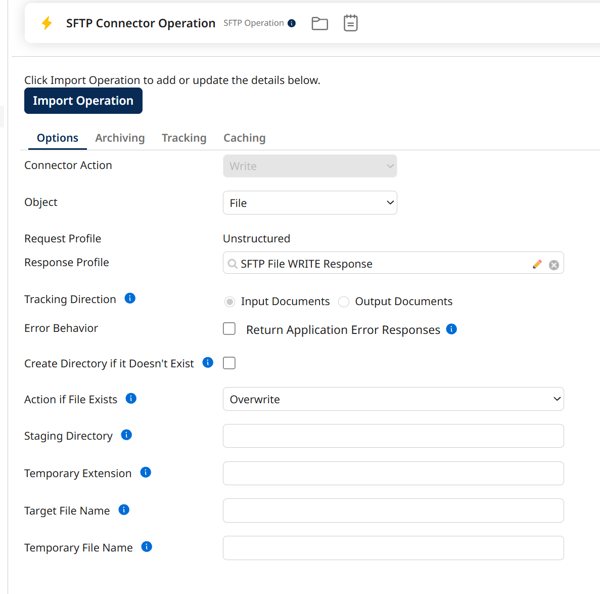
-
7
Return to the main process canvas and click Save to save all changes.
Test the Process
Run a live test execution and review the results to confirm the full EDI workflow — from file pickup through to transformation, acknowledgement, and output delivery.
-
1
With the main process open on the canvas, click the Test button in the toolbar.
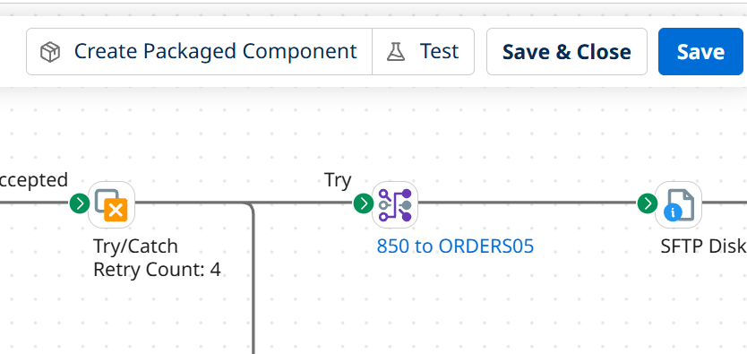
-
2
A runtime selection window will open. Select the Workshop runtime from the dropdown and click OK.
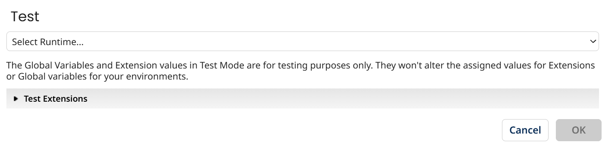
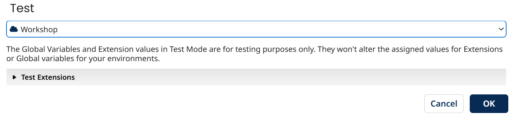
The test will execute the process against your live File Sharing account. When it completes, the results panel will display the documents and log entries for each path that was executed. Review each item to understand what happened at each stage:
-
3
Source file retrieved: The process connected to the File Sharing SFTP server and pulled the EDI 850 file from your Inbox. Confirm the document appears in the results with a successful status.
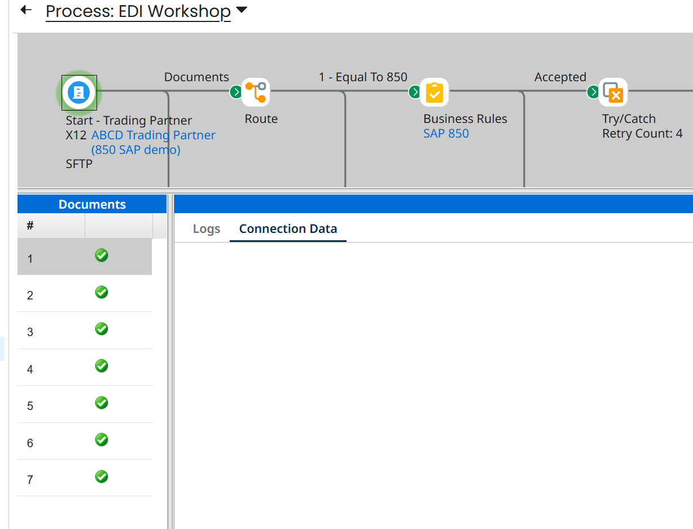
-
4
Acknowledgement sent: A 997 functional acknowledgement was automatically generated and delivered back to the trading partner via SFTP. Confirm this document appears in the results.
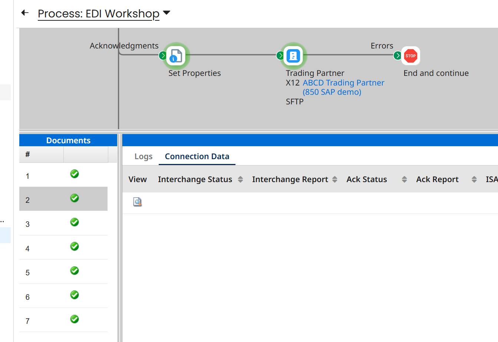
To verify this in the File Sharing portal, navigate to your Outbox folder — the acknowledgement file should now be present there.
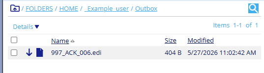
-
5
EDI processed and IDoc written: The EDI 850 was validated against business rules, mapped to SAP ORDERS05 (IDoc) format, and written to your
/Returns/IDocfolder. Confirm this in the results log and verify the file is present in your File Sharing portal.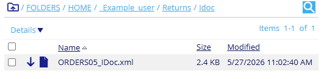
The diagram below shows the full integration process — trace the path from the start shape through validation, mapping, and each output branch to see how this result was produced.
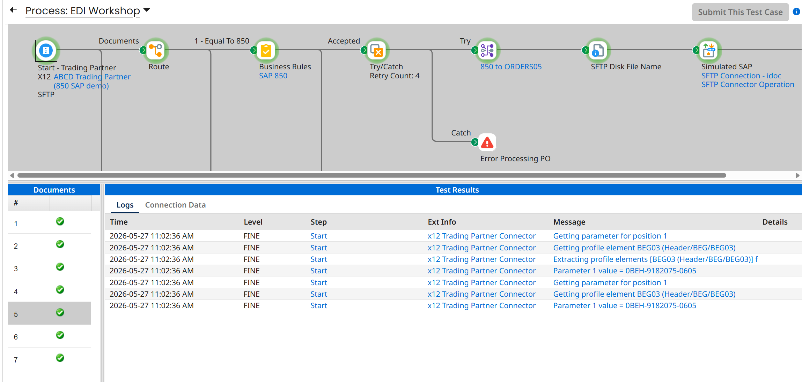
-
6
Additional document routing: Any EDI 997 acknowledgement documents present in the source were detected and routed separately from the 850 purchase orders, as they are handled by a different processing path. This demonstrates the process's ability to handle mixed document types in a single inbound flow.